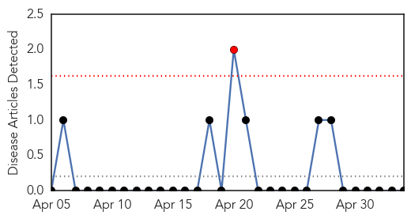
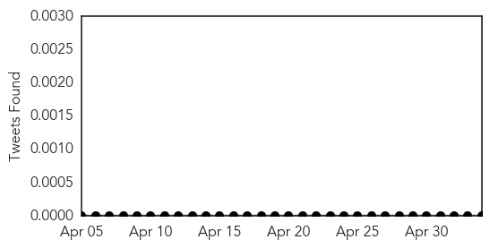
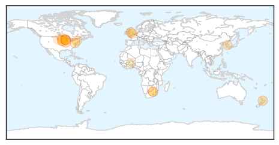

Yellow Fever
30-Day Web Trend
1 alerts, 0 warnings

30-Day Twitter Trend
0 alerts, 0 warnings

Article Locations

Article Confidences

Top Articles:
-
No articles found for May 04, 2015
Top Tweets:
-
No tweets found for May 04, 2015
Influenza
30-Day Web Trend
5 alerts, 0 warnings
30-Day Twitter Trend
3 alerts, 0 warnings

Article Locations
Article Confidences

Top Articles:
- 0.999
- A Flu Epidemic That Threatens Birds, Not Humans
- 0.953
- Illinois and Avian Influenza
- 0.925
- Iowa bird flu cases climb to 25 with 4 new outbreaks
- 0.912
- Waikato health workers may have to mask up if they refuse flu jab
- 0.912
- Waikato health workers may have to mask up if they refuse flu jab
- 0.833
- Sick Birds Prompts Iowa Governor to Declare State of Emergency
- 0.803
- National hand hygiene campaign launched - Gauteng
- 0.779
- Fourth Barron County avian influenza case
- 0.779
- Healthcare professionals urged to promote hand hygiene
- 0.751
- May 4, 2015 Archives
- 0.751
- May 3, 2015 Archives
- 0.751
- May 3, 2015 Archives
- 0.751
- May 3, 2015 Archives
- 0.733
- Iowa Governor Declares State Of Emergency Due To Bird Flu Outbreak
- 0.610
- Deadly bird flu continues march across state
- 0.515
- New Rounds, Thune Call on USDA to Provide Immediate Assistance in Fight Against Avian Flu Virus
- 0.513
- Ghana bans poultry imports from Burkina Faso – FinNewsAfrica
Top Tweets:
- 0.719
- The third outbreak of influenza A(H7N9) virus seems to be over... http://t.co/ppfySWRjML
- 0.581
- Scientific Journals news pouch on avianflu avianinfluenza Ebola MERS articles 16 - 30 April: http://t.co/CjZtqXMFwF